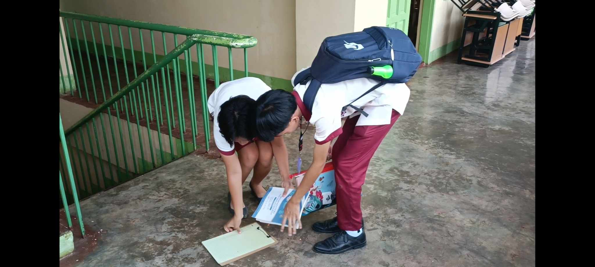

Home
Understanding Good Manners and Right Conduct

Maintaining appropriate behaviour and good manners is important for creating a welcoming learning environment for students, teachers, and other staff members. Students can create lasting relationships and improve their educational experiences by being polite and respectful to one another, listening attentively, and valuing differences. Small acts of kindness to teachers express gratitude for their hard work, and treating all staff members with respect builds a positive learning environment. These kinds of actions not only help other people but also make the atmosphere more enjoyable and effective for all parties. We can make our school a respectful, positive environment where kindness and good manners are valued, improving everyone's experience in the process.